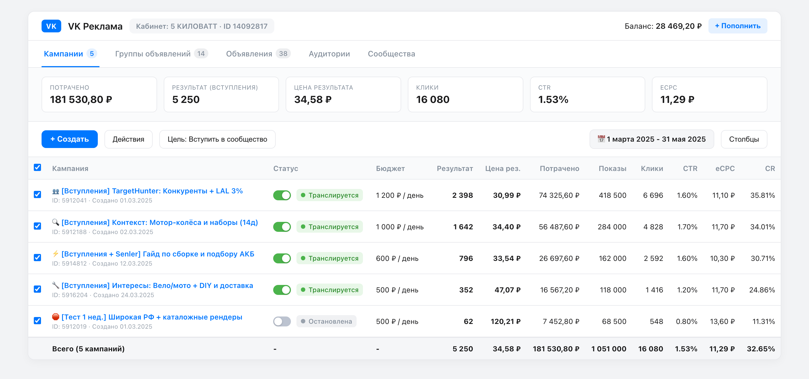
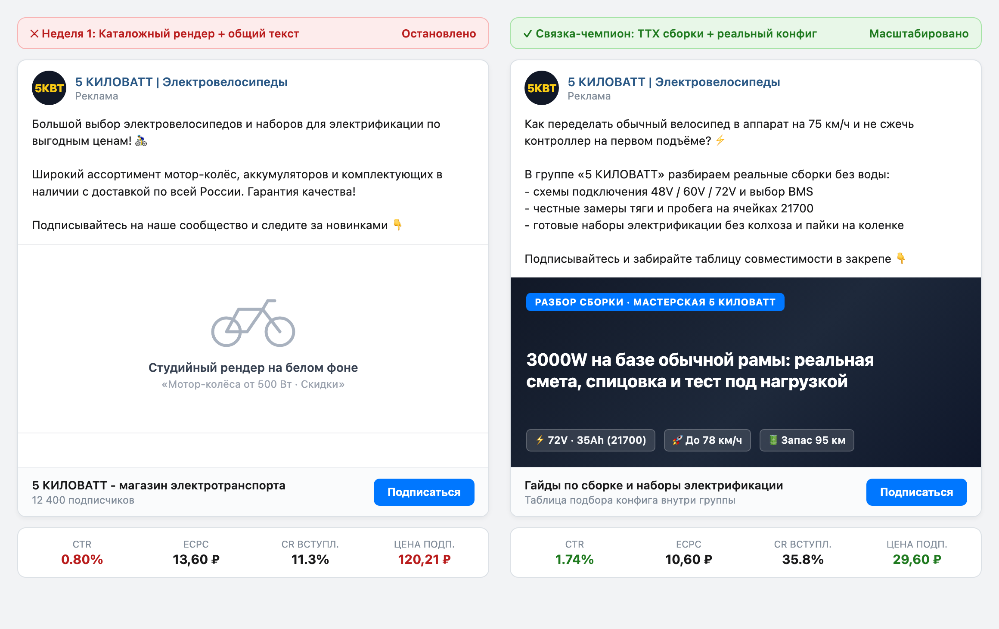

Что будет, если впервые за 10 лет запустить рекламу на привлечение подписчиков в ВК?
Инструменты & Стек
VK Ads (новый кабинет ads.vk.com, цель «Вступить в сообщество»), TargetHunter (сбор активностей и пересечение конкурентов), Senler (приветственная воронка и лид-магнит), статистика сообщества ВКонтакте
Итоги за 3 месяца работы (март - май 2025)
- Вступления в VK Ads
- 5 250
- Средняя цена: 34,58 ₽
- Чистый прирост базы
- +5 040
- С 12 400 до 17 440 (+40,6%)
- Рекламный бюджет
- 181 531 ₽
- 1 051 000 показов · CTR 1,53%
- Воронка Senler и ЛС
- 1 840 / 294
- Подписок в бота / расчётов в ЛС

Точка А: 10 лет на органике и усталость старой базы
«5 КИЛОВАТТ» - известный среди энтузиастов электротранспорта бренд и магазин в России. Компания продаёт мощные электровелосипеды (средний чек 95 000 - 240 000 ₽) и наборы для самостоятельной электрификации: мотор-колёса от 500W до 5000W, контроллеры, BMS-платы и кастомные аккумуляторы (чек набора 32 000 - 75 000 ₽).
Парадокс проекта заключался в том, что сообществу ВКонтакте исполнилось 10 лет, но за всё это время туда ни разу не запускали системную рекламу на подписку. База в 12 400 участников накопилась исторически: с YouTube-обзоров, форумов, сарафанного радио и переходов с сайта.
- Проблема выгорания ядра: часть подписчиков собрала свои велосипеды ещё 5-7 лет назад, а алгоритмическая лента ВК показывала новые посты лишь 12-15% старой аудитории.
- Неудачный прошлый опыт: попытки владельцев пару раз нажать кнопку «Продвигать запись» приводили к стоимости подписчика 140-180 ₽ без понимания, кто именно вступил в группу.
- Задача перед сезоном: за 3 весенних месяца привести минимум 5 000 свежих целевых подписчиков со средней стоимостью не выше 40 ₽ и сразу встроить их в продуктовую воронку продаж.
Этап 1. Упаковка сообщества и интеграция Senler перед запуском
Лить платный трафик в неупакованную группу с редкими обзорами «для своих» - быстрый способ слить половину подписок в первую неделю. В этой нише клиент выбирает комплект или байк от 2 недель до 3 месяцев: ему страшно ошибиться с вольтажом, размерами дропаутов рамы и ёмкостью АКБ.
До старта рекламного кабинета VK Ads мы пересобрали посадочную площадку:
- Обложка и закреп под новичка: на первом экране зафиксировали специализацию («Наборы электрификации и байки до 8 кВт с гарантией и техподдержкой по РФ»), а в закреплённый пост вынесли навигатор по подбору первого комплекта.
- Лид-магнит в Senler: запустили виджет и чат-бот «Таблица совместимости мотор-колеса, контроллера и АКБ под вес райдера и нужную скорость». Новые подписчики сами заходили в рассылку за полезной шпаргалкой.
- 4-шаговая цепочка прогрева: после выдачи таблицы бот в Senler уточнял сценарий использования (коммьютинг на работу, бездорожье или курьерская доставка) и предлагал бесплатную проверку совместимости под конкретную раму велосипеда в сообщениях сообщества.
Этап 2. Сегментация аудиторий: TargetHunter + новый кабинет VK Ads
В новом кабинете VK Реклама основная проблема технических ниш - размывание интересов на широкой аудитории. Алгоритм быстро уходит в любителей обычных прогулочных велосипедов или электросамокатов. Чтобы удержать целевую цену подписчика около 35 ₽, трафик разделили на 5 независимых кампаний по теплоте спроса:
| Кампания / Сегмент | Механика таргетинга | Клики / CTR | Вступления (CR) | CPF (Цена подп.) |
|---|---|---|---|---|
| 1. TargetHunter + LAL 3% | Активности у 42 прямых конкурентов и пабликов DIY-электротранспорта, участники от 2+ тематических групп, плюс Look-a-Like 3% по базе вошедших в Senler. | 6 696 кликов CTR 1,60% · eCPC 11,10 ₽ |
2 398 CR 35,81% |
30,99 ₽ Расход 74 325,60 ₽ |
| 2. Контекстный таргетинг | Ключевые запросы в поиске ВК и Mail.ru за 14 дней: мотор колесо, набор электровелосипеда, акб 48v/72v. Плюс 180+ минус-слов (самокат, детский, игрушка, авито б/у). |
4 828 кликов CTR 1,70% · eCPC 11,70 ₽ |
1 642 CR 34,01% |
34,40 ₽ Расход 56 487,60 ₽ |
| 3. Гайды + триггер Senler | Тёплое ядро + посетители сайта за 90 дней: креативы с предложением сразу забрать таблицу подбора сборки внутри группы после подписки. | 2 592 клика CTR 1,60% · eCPC 10,30 ₽ |
796 CR 30,71% |
33,54 ₽ Расход 26 697,60 ₽ |
| 4. Интересы Вело / DIY | Мужчины 25-55 лет с интересами «Велоспорт», «Мототехника», «Сделай сам / Инструменты», а также сегмент курьеров доставки в городах-миллионниках. | 1 416 кликов CTR 1,20% · eCPC 11,70 ₽ |
352 CR 24,86% |
47,07 ₽ Расход 16 567,20 ₽ |
| 5. Тест: Широкая РФ (Стоп) | Запуск 1-й недели без жёстких фильтров на автоставке с каталожными рендерами байков. Остановлена на 7-й день из-за низкого CR. | 548 кликов CTR 0,80% · eCPC 13,60 ₽ |
62 CR 11,31% |
120,21 ₽ Расход 7 452,80 ₽ |
Этап 3. A/B-тест креативов: почему «глянец» проиграл мастерской в 4 раза
В первую неделю мы допустили классическую ошибку интернет-магазинов: запустили чистые студийные фото велосипедов на белом фоне с общими текстами про «широкий ассортимент и доставку по РФ». Целевая аудитория мастеров и райдеров пролистывала такие объявления, принимая их за очередной перекуп с маркетплейсов: CTR упал до 0,80%, а подписчик обходился в 120,21 ₽.
Перелом произошёл после смены подачи на инженерную конкретику и реальные ТТХ прямо на креативе. Лучше всего выстрелили три формата посылов:
- Разбор конкретной сборки (Связка-чемпион): реальные фото из мастерской со спицовкой мотор-колеса и цифрами «3000W на базе обычной рамы · 72V 35Ah · до 78 км/ч». CTR вырос с 0,80% до 1,74%, а цена подписки упала вчетверо до 29,60 ₽.
- Анти-фейл с дешёвыми наборами: разбор типичных ошибок при покупке комплектов без контроля тока и дешёвых BMS («Почему мотор-колесо за 15 000 ₽ сгорает на первом затяжном подъёме»).
- Экономика для работы и коммьютинга: расчёт окупаемости сборки электробайка против аренды транспорта или расходов на бензин при ежедневном пробеге 60-80 км.

Проблемы по ходу квартала и как удерживали цену около 35 ₽
Рост в 5 000+ подписчиков за 92 дня не бывает линейным. По ходу кампании мы столкнулись с тремя узкими местами, которые пришлось чинить вручную:
- Молодая аудитория 18-23 скликивала бюджет без подписок в Senler: в первые 10 дней парни до 24 лет активно переходили на картинки «78 км/ч», но практически не интересовались комплектующими. После жёсткого отсечения возраста младше 25 лет eCPC чуть вырос, но конверсия во вступление и подписку в Senler выросла на 28%.
- Выгорание ядра конкурентов на 5-й неделе: база активных подписчиков смежных вело-сообществ ограничена. Когда частота показов превысила 3,8, стоимость вступления в первой кампании пошла вверх с 28 ₽ до 44 ₽. Мы сняли перегрев ротацией новых фото кастомных сборок каждые 12 дней и расширением Look-a-Like до 3% от пользователей, вступивших за последний месяц.
- Мусорный хвост в контекстном таргетинге: в автоматических синонимах VK Ads к «электровелосипедам» начали подмешиваться детские электромобили и дешёвые городские самокаты. Регулярная чистка контекстных фраз и расширение списка до 180+ минус-слов вернули кампанию в коридор 33-35 ₽ за подписчика.
Результат: рост сообщества на +40,6% и конвертация базы в заявки
За три месяца работы (1 марта - 31 мая 2025) рекламный кабинет VK Ads привёл 5 250 вступлений при суммарном расходе 181 530,80 ₽ - средняя цена привлечения составила 34,58 ₽. С учётом естественной органики (+162) и оттока части аудитории (-372, нормальный churn 6,8% при агрессивном масштабировании) чистый прирост группы составил +5 040 человек. Сообщество выросло с 12 400 до 17 440 подписчиков.
Главное, что это не «мёртвые души» из конкурсов: 91% привлечённой аудитории - платёжеспособные мужчины, из которых 76% в возрасте 25-44 лет по всей России (Москва и МО 31%, СПб 14%, крупные промышленные и южные регионы 55%). В рассылку Senler зашли 1 840 человек, а в сообщения сообщества поступило 294 прямых запроса на подбор комплекта или готового байка.

Что дальше и главные выводы для товарных сообществ
1. Опирайтесь на практику, а не на глянец: в сложных технических нишах «грязные» фото из мастерской, схемы подключения и честные цифры ТТХ дают CTR в 2 раза выше и снижают стоимость подписчика в 3-4 раза по сравнению со студийными баннерами.
2. Не оставляйте нового подписчика один на один со стеной: связка цели «Вступить в сообщество» в VK Ads и лид-магнита в Senler сразу превращает холодного читателя в диалог с подбором товара под его бюджет.
3. Растём дальше: рекламный кабинет продолжает работать в сезоне с плановым удержанием цены подписчика в коридоре 32-38 ₽, а на собранную базу из 5 000+ свежих участников дополнительно запускаются ретаргетинговые дожимы на акции и сезонные сборки.